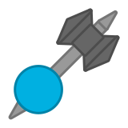

"Regionals" refers to tank parts thrown as projectiles in Woomy lingo.
The Axethrower is an Axeman that can throw its axe as a regional.
It has a team-colored circular body with a long but thin gray handle with a spear tip on its end and a dark gray double-headed axe head.
It can mine wood by touching it with the axe head. It does this via an explosion with radius equivalent to the tank body and center on the pickaxe head.
The Axe can deal melee damage to enemy tanks, being more damaging than Lancer, with the added l-click bonus of disabling physical shields for 5 seconds.
The axe can be thrown on right-click, spinning and dealing massive damage to anything unfortunate enough to touch its head. However you lose your only weapon for 10 seconds. After this period you have to wait yet another 10 seconds to throw your axe again.

Tier 5 Tank
Upgrades from Axeman
Weapons:
Inherits base body stats from Axeman
An Axeman that can throw its axe.